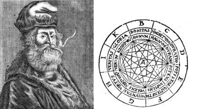
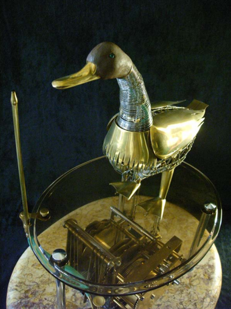
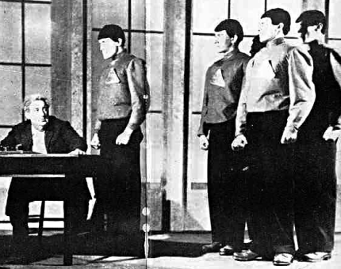

<!DOCTYPE html>
<head>
    <meta name="viewport" content="width=device-width, initial-scale=1.0">
    <meta charset="utf-8">
    <title>Chapter 1: Dreams and Dreamers</title>
    <link rel="shortcut icon" href="/assets/favicon.ico">
    <!-- <link rel="stylesheet" href="main.css">
    <link rel="stylesheet" href="style.css"> -->
</head>
<body>
	<section id="header">
		<header>
            <h2>Chapter 1</h2><br>
            <h3>Chapter 1: Dreams and Dreamers</h3>
		</header>
	</section>
    <br>
	<main>
		<p>The quest for artificial intelligence (AI) begins with dreams – as all quests do.
            People have long imagined machines with human abilities – automata that
            move and devices that reason. Human-like machines are described in many
            stories and are pictured in sculptures, paintings, and drawings.<br>
            You may be familiar with many of these, but let me mention a few. The
            Iliad of Homer talks about self-propelled chairs called “tripods” and golden
            “attendants” constructed by Hephaistos, the lame blacksmith god, to help him
            get around.1∗ And, in the ancient Greek myth as retold by Ovid in his
            Metamorphoses, Pygmalian sculpts an ivory statue of a beautiful maiden,
            Galatea, which Venus brings to life:<br><br>
            
            The girl felt the kisses he gave, blushed, and, raising her bashful
            eyes to the light, saw both her lover and the sky.<br><br>
            The ancient Greek philosopher Aristotle (384–322 bce) dreamed of
            automation also, but apparently he thought it an impossible fantasy – thus
            making slavery necessary if people were to enjoy leisure. In his The Politics,
            he wrote.3<br><br>
            
            For suppose that every tool we had could perform its task, either
            at our bidding or itself perceiving the need, and if – like. . . the
            tripods of Hephaestus, of which the poet [that is, Homer] says that
            “self-moved they enter the assembly of gods” – shuttles in a loom
            could fly to and fro and a plucker [the tool used to pluck the
            strings] play a lyre of their own accord, then master craftsmen
            would have no need of servants nor masters of slaves. <br><br>


            <i>∗So as not to distract the general reader unnecessarily, numbered notes containing citations
                to source materials appear at the end of each chapter. Each of these is followed by the number
                of the page where the reference to the note occurred.</i><br><br>


                Aristotle might have been surprised to see a Jacquard loom weave of itself or a
                player piano doing its own playing.<br><br>

                Pursuing his own visionary dreams, Ramon Llull (circa 1235–1316), a
                Catalan mystic and poet, produced a set of paper discs called the Ars Magna
                (Great Art), which was intended, among other things, as a debating tool for
                winning Muslims to the Christian faith through logic and reason. (See Fig.
                1.1.) One of his disc assemblies was inscribed with some of the attributes of
                God, namely goodness, greatness, eternity, power, wisdom, will, virtue, truth,
                and glory. Rotating the discs appropriately was supposed to produce answers
                to various theological questions.4<br><br>
                <br><br>

                Figure 1.1: Ramon Llull (left) and his Ars Magna (right).<br><br>
                Ahead of his time with inventions (as usual), Leonardo Da Vinci sketched
                designs for a humanoid robot in the form of a medieval knight around the year
                1495. (See Fig. 1.2.) No one knows whether Leonardo or contemporaries tried
                to build his design. Leonardo’s knight was supposed to be able to sit up, move
                its arms and head, and open its jaw.5<br><br>
                The Talmud talks about holy persons creating artificial creatures called
                “golems.” These, like Adam, were usually created from earth. There are
                stories about rabbis using golems as servants. Like the Sorcerer’s Apprentice,
                golems were sometimes difficult to control.<br><br>
                In 1651, Thomas Hobbes (1588–1679) published his book Leviathan about
                the social contract and the ideal state. In the introduction Hobbes seems to
                say that it might be possible to build an “artificial animal.”6<br><br>

                For seeing life is but a motion of limbs, the beginning whereof is in
                some principal part within, why may we not say that all automata
                (engines that move themselves by springs and wheels as doth a
                <br><br>
                Figure 1.2: Model of a robot knight based on drawings by Leonardo da Vinci.<br><br>
                watch) have an artificial life? For what is the heart, but a spring;
                and the nerves, but so many strings; and the joints, but so many
                wheels, giving motion to the whole body. . .<br><br>
                Perhaps for this reason, the science historian George Dyson refers to Hobbes
                as the “patriarch of artificial intelligence.”7<br><br>
                In addition to fictional artifices, several people constructed actual
                automata that moved in startlingly lifelike ways.8 The most sophisticated of
                these was the mechanical duck designed and built by the French inventor and
                engineer, Jacques de Vaucanson (1709–1782). In 1738, Vaucanson displayed
                his masterpiece, which could quack, flap its wings, paddle, drink water, and
                eat and “digest” grain.<br><br>
                As Vaucanson himself put it,9
           
                My second Machine, or Automaton, is a Duck, in which I represent
                the Mechanism of the Intestines which are employed in the
                Operations of Eating, Drinking, and Digestion: Wherein the
                Working of all the Parts necessary for those Actions is exactly
                imitated. The Duck stretches out its Neck to take Corn out of your
                Hand; it swallows it, digests it, and discharges it digested by the
                usual Passage. <br><br>
                There is controversy about whether or not the material “excreted” by the
                duck came from the corn it swallowed. One of the automates-anciens Web
                sites10 claims that “In restoring Vaucanson’s duck in 1844, the magician
                Robert-Houdin discovered that ‘The discharge was prepared in advance: a sort
                of gruel composed of green-coloured bread crumb . . . ’.”<br><br>
                Leaving digestion aside, Vaucanson’s duck was a remarkable piece of
                engineering. He was quite aware of that himself. He wrote11<br><br>

                I believe that Persons of Skill and Attention, will see how difficult
                it has been to make so many different moving Parts in this small
                Automaton; as for Example, to make it rise upon its Legs, and
                throw its Neck to the Right and Left. They will find the different
                Changes of the Fulchrum’s or Centers of Motion: they will also see
                that what sometimes is a Center of Motion for a moveable Part,
                another Time becomes moveable on that Part, which Part then
                becomes fix’d. In a Word, they will be sensible of a prodigious
                Number of Mechanical Combinations.<br>
                This Machine, when once wound up, performs all its different
                Operations without being touch’d any more.<br>
                I forgot to tell you, that the Duck drinks, plays in the Water with
                his Bill, and makes a gurgling Noise like a real living Duck. In
                short, I have endeavor’d to make it imitate all the Actions of the
                living Animal, which I have consider’d very attentively.<br><br>

                Unfortunately, only copies of the duck exist. The original was burned in a
                museum in Nijninovgorod, Russia around 1879. You can watch, ANAS, a
                modern version, performing at http://www.automates-anciens.com/video 1/
                duck automaton vaucanson 500.wmv.
                12 It is on exhibit in the Museum of
                Automatons in Grenoble and was designed and built in 1998 by Fr´ed´eric
                Vidoni, a creator in mechanical arts. (See Fig. 1.3.)<br><br>
                Returning now to fictional automata, I’ll first mention the mechanical,
                life-sized doll, Olympia, which sings and dances in Act I of Les Contes
                d’Hoffmann (The Tales of Hoffmann) by Jacques Offenbach (1819–1880). In
                the opera, Hoffmann, a poet, falls in love with Olympia, only to be crestfallen
                (and embarrassed) when she is smashed to pieces by the disgruntled Copp´elius.<br><br>
                <br><br>
                Figure 1.3: Fr´ed´eric Vidoni’s ANAS, inspired by Vaucanson’s duck. (Photograph courtesy of Fr´ed´eric Vidoni.)<br><br>
                A play called R.U.R. (Rossum’s Universal Robots) was published by Karel
                Capek (pronounced CHAH pek), a Czech author and playwright, in 1920. (See ˘
                Fig. 1.4.) Capek is credited with coining the word “robot,” which in Czech ˘
                means “forced labor” or “drudgery.” (A “robotnik” is a peasant or serf.)<br><br>
                The play opened in Prague in January 1921. The Robots (always
                capitalized in the play) are mass-produced at the island factory of Rossum’s
                Universal Robots using a chemical substitute for protoplasm. According to a
                Web site describing the play,13 “Robots remember everything, and think of
                nothing new. According to Domin [the factory director] ‘They’d make fine
                university professors.’ . . . once in a while, a Robot will throw down his work
                and start gnashing his teeth. The human managers treat such an event as
                evidence of a product defect, but Helena [who wants to liberate the Robots]
                prefers to interpret it as a sign of the emerging soul.”<br><br>
                I won’t reveal the ending except to say that Capek did not look eagerly ˘
                on technology. He believed that work is an essential element of human life.
                Writing in a 1935 newspaper column (in the third person, which was his habit)
                he said: “With outright horror, he refuses any responsibility for the thought
                that machines could take the place of people, or that anything like life, love, or
                rebellion could ever awaken in their cogwheels. He would regard this somber
                vision as an unforgivable overvaluation of mechanics or as a severe insult to
                life.”14<br>
                <br><br>
                Figure 1.4: A scene from a New York production of R.U.R.<br><br>
                There is an interesting story, written by Capek himself, about how he ˘
                came to use the word robot in his play. While the idea for the play “was still
                warm he rushed immediately to his brother Josef, the painter, who was
                standing before an easel and painting away. . . . ‘I don’t know what to call
                these artificial workers,’ he said. ‘I could call them Labori, but that strikes me
                as a bit bookish.’ ‘Then call them Robots,’ the painter muttered, brush in
                mouth, and went on painting.”15<br><br>
                The science fiction (and science fact) writer Isaac Asimov wrote many
                stories about robots. His first collection, I, Robot, consists of nine stories
                about “positronic” robots.16 Because he was tired of science fiction stories in
                which robots (such as Frankenstein’s creation) were destructive, Asimov’s
                robots had “Three Laws of Robotics” hard-wired into their positronic brains.
                The three laws were the following:<br><br>
                First Law: A robot may not injure a human being, or, through inaction,
                allow a human being to come to harm.<br>
                Second Law: A robot must obey the orders given it by human beings
                except where such orders would conflict with the First Law.<br>
                Third Law: A robot must protect its own existence as long as such
                protection does not conflict with the First or Second Law.<br>
                <br><br>Asimov later added a “zeroth” law, designed to protect humanity’s interest:17<br><br>
                Zeroth Law: A robot may not injure humanity, or, through inaction, allow
                humanity to come to harm.<br><br>
                The quest for artificial intelligence, quixotic or not, begins with dreams
                like these. But to turn dreams into reality requires usable clues about how to
                proceed. Fortunately, there were many such clues, as we shall see.
                <h3>Notes</h3>
                1. The Iliad of Homer, translated by Richmond Lattimore, p. 386, Chicago: The
                University of Chicago Press, 1951. (Paperback edition, 1961.) [19] <br>
                2. Ovid, Metamorphoses, Book X, pp. 243–297, from an English translation, circa 1850.
                See http://www.pygmalion.ws/stories/ovid2.htm. [19]<br>
                3. Aristotle, The Politics, p. 65, translated by T. A. Sinclair, London: Penguin Books,
                1981. [19]<br>
                4. See E. Allison Peers, Fool of Love: The Life of Ramon Lull, London: S. C. M. Press,
                Ltd., 1946. [20]<br>
                5. See http://en.wikipedia.org/wiki/Leonardo’s robot. [20]<br>
                6. Thomas Hobbes, The Leviathon, paperback edition, Kessinger Publishing, 2004. [20]<br>
                7. George B. Dyson, Darwin Among the Machines: The Evolution of Global Intelligence,
                p. 7, Helix Books, 1997. [21]<br>
                8. For a Web site devoted to automata and music boxes, see
                http://www.automates-anciens.com/english version/frames/english frames.htm. [21]<br>
                9. From Jacques de Vaucanson, “An account of the mechanism of an automaton, or image
                playing on the German-flute: as it was presented in a memoire, to the gentlemen of the
                Royal-Academy of Sciences at Paris. By M. Vaucanson . . . Together with a description of an
                artificial duck. . . . .” Translated out of the French original, by J. T. Desaguliers, London,
                1742. Available at http://e3.uci.edu/clients/bjbecker/NatureandArtifice/week5d.html. [21]<br>
                10. http://www.automates-anciens.com/english version/automatons-music-boxes/
                vaucanson-automatons-androids.php. [22]<br>
                11. de Vaucanson, Jacques, op. cit. [22]<br>
                12. I thank Prof. Barbara Becker of the University of California at Irvine for telling me about
                the automates-anciens.com Web sites. [22]<br>
                13. http://jerz.setonhill.edu/resources/RUR/index.html. [24]<br>
                14. For a translation of the column entitled “The Author of Robots Defends Himself,” see
                http://www.depauw.edu/sfs/documents/capek68.htm. [24]<br>
                15. From one of a group of Web sites about Capek, ˘
                http://Capek.misto.cz/english/robot.html. See also http://Capek.misto.cz/english/. [25]<br>
                16. The Isaac Asimov Web site, http://www.asimovonline.com/, claims that “Asimov did
                not come up with the title, but rather his publisher ‘appropriated’ the title from a short
                story by Eando Binder that was published in 1939.” [25]<br>
                17. See http://www.asimovonline.com/asimov FAQ.html#series13 for information about
                the history of these four laws. [25]<br>
            </p>
	</main>